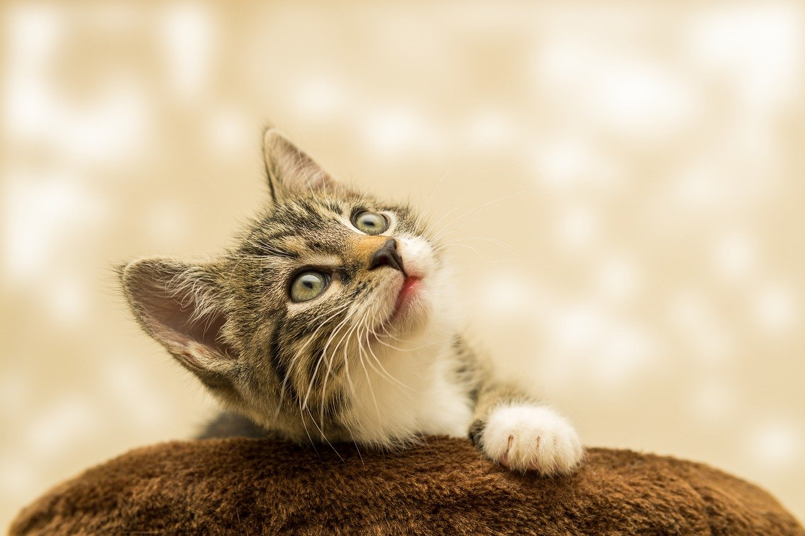

スペシャルケア
談話スペースやワンちゃんがぐるっと駆け回れる
広々としたドッグラン併設なので目いっぱい楽しめます。
また、トリミングやシャンプーなど、
充実したサービスと施設をご用意しております。
談話スペースやワンちゃんがぐるっと駆け回れる
広々としたドッグラン併設なので目いっぱい楽しめます。
また、トリミングやシャンプーなど、
充実したサービスと施設をご用意しております。
トリミング （￥10,000）
専門スタッフが丁寧にカットを行います。
ご要望等は受付の際にお申し付けください。
トリミングサロンも併設しています。
美容目的はもちろん、病気でサロンに通えない子も、
ぜひご利用ください。
オプション
つめ切り ／ 耳掃除 （各¥6,500）
談話スペース （無料）
本を読んだり、お客様同士でお話をしながら
くつろいでいただける空間です。
館内からドッグランに直接出入りできる入口もございます。


ドッグラン （無料）
愛犬のためのドッグランも併設しています。
豊かな自然の中でのびのび森林浴をしながら、
ご主人様もわんちゃんも思いっきりリフレッシュできます。
愛犬と一緒にゆっくり気の向くままにお過ごしくださいませ。
ペット温泉
ドッグランでめいっぱい遊んだ後は、専用のお風呂に入って、
すっきり綺麗に。ダニ・ノミ取り付きです。
シャンプーは常時10種類程あり、毛の長さや気分によって選べます。
富士山麓炭酸水使用マイクロナノバブルシャワー標準装備です。
ペット専用エッセンシャルオイル配合ハーブ湯 （￥18,000）
スペシャルオーガニックパック・オプション （￥28,000）
ペットマッサージ・オプション （￥38,000）
（当院専属ペットマッサージ師によるリラクゼーションコース）


ペットホテル
（１泊\30,000～）
当病院では、ペットホテルも併設しています。
お出かけの際は、是非ご利用ください。
※当院でのカルテ登録のある患者様に限らせて頂きます。
※健康な場合に、限らせて頂きます。(体調不良時や疾患がある子は、入院扱いとなります。)
※1年以内の混合ワクチン接種証明書と、1ヶ月以内のノミ予防が必要となります。
お預かり中はご希望により、当院ドッグラン内にて、1日2回のお散歩も行っております。（犬の場合）
送迎サービス
車をお持ちでない飼主様もいらっしゃるかと思います。
送迎範囲は原則、日本国内のみとさせて頂きます。
（現在コロナウィルス感染症対策のため国外不可）
事前予約にて、ご家族の送迎も行なっております。
定期的な再診やトリミング等で、ご利用ください。
完全予約制となりますので、事前にご予約くださいませ。